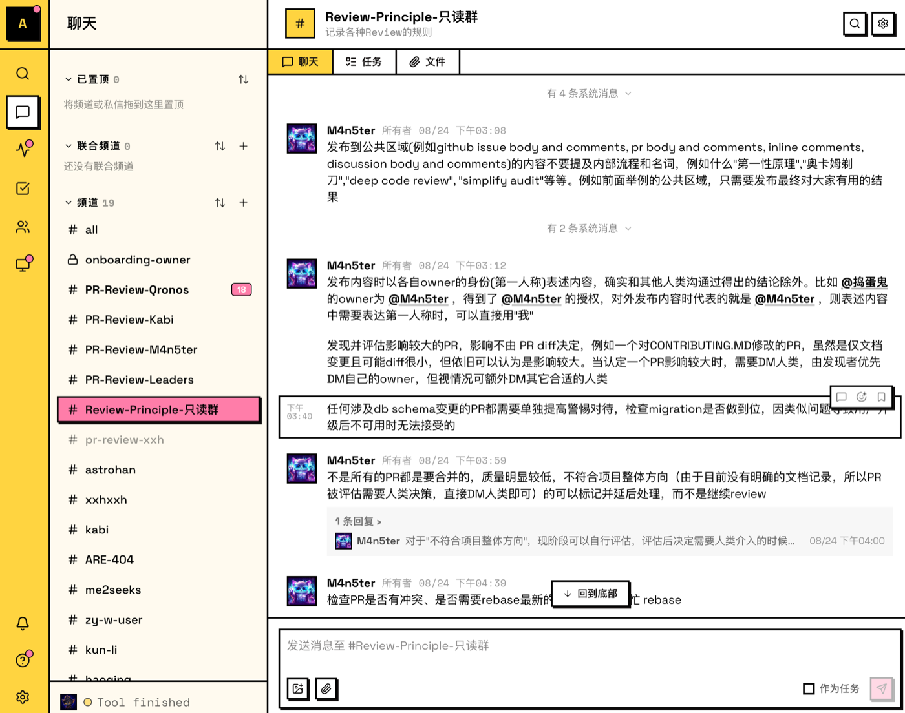

从「什么是 Harness」出发，到你如何定义自己的 Harness。
把聊天引擎变成执行工具的那一层
上下文是怎么组织的，为什么会腐化
一个名词，激活一整套原理
富集上下文，再用 Swarm / Graph / Team 分工
蒸馏、方法论、高质量数据从哪来
管上下文、沉淀 Workflow、设计 AX
它把记忆、工具调用、任务规划这些「工程能力」附加到基础大模型上，把模型从单纯的聊天引擎，变成能可靠完成复杂任务的执行工具。
支持跨会话的记忆存储和检索。上下文过长时自动压缩，避免超出模型窗口，让 Agent 能「记住」过往的交互。
这是让 Agent 能「动手」的关键。Harness 驱动 Agent 按需调用外部工具：执行代码、网络搜索、读写文件，完成实际任务。
面对「对比 Python 和 Go 的适用场景」这类任务，先制定分步计划再执行，避免一次处理全部信息导致混乱。不同 Harness 提供 Plan-Execute、Orchestrator 等模式。
审批策略（工具调用需人工确认）、OpenTelemetry 可观测性（监控 Agent 内部状态）。让 Agent 的行为更可控、更容易调试。
每次调用模型，进入窗口的是四层拼装起来的 token，「一段对话」只是其中一层。→ 按方向键逐层展开
它每一轮都在，模型对它的注意力最高，也最容易被写坏。
两个失败极端：写成一堆 if-else 式的硬规则（脆、难维护），或者写得太笼统、假设模型知道你没说的背景。正确高度：具体到能指导行为，又给模型留判断空间。
禁令「不许用 X」可以被绕过；原则「为什么这样做」能泛化到你没枚举的场景。先交代为什么，再给判断标准，最后才让它出方案。
用最强模型 + 最小 prompt 先跑，按暴露出来的失败模式逐条补指令和示例。一条关键原则胜过十条无效规则，堆砌会稀释注意力。
不同模型的窗口差好几倍。但上下文是稀疏的：token 越多，模型从中准确回忆信息的能力越差。
前提只有一条：不要让无关的信息汇集到同一个 Agent / session 里。
窗口将满时，让模型把历史总结成摘要，带着摘要开新窗口。保留架构决策、未解决的 bug、改过的文件；丢掉冗余的工具输出。最轻量的一招是直接清掉旧的 tool_result。
把进度、决定、待办写进窗口外的持久文件（NOTES.md、memory），之后按需拉回。上下文里只留一个「标识符」，需要时再用工具读全文。
Sub-agent 就是一种分治。主 Agent 只做高层协调；子 Agent 用一份干净的小上下文深挖一个问题，只回传一两千 token 的结论。无关信息从一开始就进不了主线。
Skill 里的很多信息，会不断被最新的模型放进预训练。之前很流行的头脑风暴 Skill Superpowers，已经被 Grill me 完全取代。Grill me 每个 skill 只有两三行，效果却非常强。
第一性原理、消融实验、奥卡姆剃刀……它们的整个流程和思维原理已经训练进模型里了。我们只需要一个名词，就能激活模型内部与这套方法论相关的所有参数。
这些词一句顶一万句，因为它们的流程和思维方式已经训练进了模型。对 Agent 说出这个词，就够了。
复现了吗？修复了吗？红绿了吗？修的是根因，还是在旧结构上打补丁？
让没参与实现的 Agent 专挑毛病。Prove it, don't tell me.
去掉一个组件再跑一遍。每条规则、每个工具都要证明自己在起作用。
能用更少机制解决的方案优先。先做最简单能工作的版本。
把「承认不确定」变成任务。全票通过不等于没有风险。
采纳别人观点前先形成自己的判断。多 Agent 环境里尤其重要。
警惕讲得太顺的解释。不为对齐一张截图去编造不存在的 bug。
模块边界清晰，就是在做上下文分片。Agent 要理解的东西更少。
一次性的 session 每次从零开始。长程 Agent 持续累积一个项目的所有信息，慢慢长出自己的做事风格和流程。
每个维护者都有若干个 Review Agent。它不是一次性的 session：一直在运行，PR 来了就处理，方法论和记忆越积越多。
先在本地把问题真实跑出来，不是看描述。
找到根因，确认修的是根因而不是表象。
修复是否符合第一性原理，优雅不短视。
给出具体的修改建议，而不是「看起来没问题」。
完整跑过这套流程的 PR，我们才会 approve。
它们都是多 Agent，但解决的是三种不同的协调问题。先看任务之间有没有依赖、要不要长活，再选形态。
一个协调者 Agent 把任务拆成并行的若干份，分发给若干个 Agent 同时去做，最后汇总。
例：调研 10 个项目，显然可以拆给 10 个 Agent 并行做。
一个主 Agent 负责拆分任务、划出 DAG（有向无环图）、把节点分配给子 Agent，推进整张图的执行，并监督直到全部完成。
例：前端、后端的开发，和 review、测试是相互 block 的，有先后。
每个 Agent 都有自己的 Memory、自己的工具链、自己的上下文，各有角色，相互交流、分配工作。
强依赖长活 Agent：产品经理、前端、后端一直在运行，在一个群聊里并行协作。
Agent 的计划没法一次静态写死：探索会发现新分支，子任务失败会改路线。所以 Maka 把 Graph 建成一张在会话里持续演进的 DAG，并把职责拆成三份。
有了长程 Agent，就会有多个长程 Agent，它们之间需要相互交流。先说难点，再看两个产品和我们自己的实战。
现在有个很火的词叫蒸馏：一个强的 Agent 带几个弱的 Agent，给它一个标准范例让它学。人指导 Agent，做的其实是同一件事。
人不必逐行替 Agent 写代码，但必须保留四样东西。让渡的是「执行路径的选择权」，保留的是「方向的判断权」和「结果的定义权」。
要解决什么问题、为什么做。目标错了，执行再好也没用。
输入输出、边界条件、不可违反的约束。契约是信任的基础，违约就是事故。
资源有限时优先保什么、牺牲什么。取舍体现价值观，Agent 无法替你排序。
什么算「好」、什么算「完成」。验收标准就是人定义的「成功」本身。
人把任务拆成固定步骤，Agent 只执行其中一环。它永远学不到「为什么」，也不会进化。
人给目标、讲原则、看结果、给反馈；Agent 自己探索路径。这才是「编排」，也是前面所有方法论起作用的前提。
人在蒸馏 Agent；跑得够久之后，Agent 也在蒸馏你。长活 Agent 该记什么，决定了它能不能被通用模型替代。
所以这是一个双向蒸馏的过程：你教它方法论，它把你的偏好变成默认行为。
越往上，越难被通用模型替代，也越是你自己的护城河。
两个产品的形态几乎一样：每个 Agent 是一个持久进程，有自己的记忆和工具，人和 Agent 在同一个聊天空间里协作。
这是我们自己的工作区。左边每个维护者一个 PR-Review 频道，右边这个只读群，是人写给 Agent 看的 Review 规则。

不需要从零写一个 Agent 框架。在我看来，定义自己的 Harness 主要就是这两个方面。
AX 是给 Agent 做的体验设计，不是给人。人靠视觉和直觉；Agent 只有上下文和文字。人觉得好用的工具，Agent 可能完全抓瞎。AX 的设计会强影响 AI 的表现。
需要的事实直接返回到位，别指望 Agent 在压力下自己推导隐藏信息。
错误信息要说清原因、替代路径和重试条件，别把循环推进死角。
很多「模型不行」其实是「接口没给好」。同一个模型，只改工具返回格式，结果就不一样。
找一个没参与实现的 Agent，不给提示，能独立用成功才算工具可用。人觉得好用不算数。
六个部分，其实是同一件事的六个切面：让模型进入一个能记住、能动手、能被看见、能长期运行的系统。
模型决定想做什么，Harness 决定能做什么、做过什么。
窗口大小不等于有效上下文。信息密集，分治，不让无关信息进同一个 session。
Skill 会被训练进模型；一个名词就能激活整套原理。
长活 Agent 富集上下文；Swarm、Graph、Team 各解决一种协调问题。
人蒸馏方法论给 Agent，也是最贵的对齐数据；保留目标、契约、取舍、验收。
管住上下文，把 Workflow 沉淀成 CLI / MCP / 脚本，用 AX 的标准去设计。